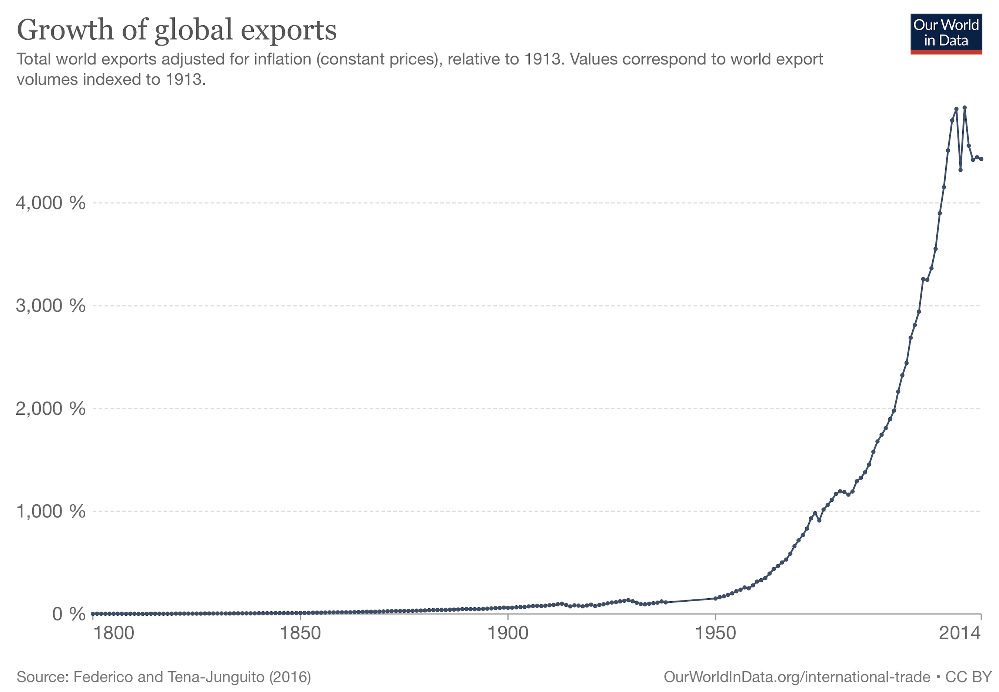
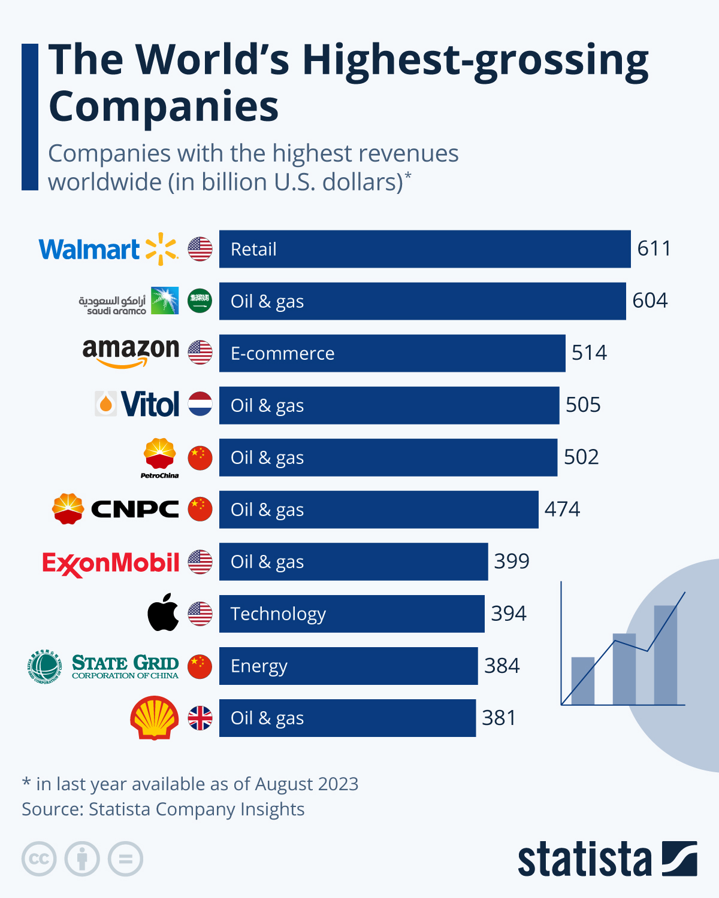

Global Business
INTL-I103 | Day 3 — Multinationals, Power & Why Countries Want FDI
August 31, 2026
Today’s Plan
Today’s Big Question
Who has power in global business — governments, firms, or society — and when, why, and to what effect? Watch for this question all semester.
| Section | What we’ll cover |
|---|---|
| 1 · Framing the semester | The power question that runs through every case |
| 2 · Stylized facts | How big, integrated, and concentrated the global economy is |
| 3 · Why firms go abroad | Motives, entry modes, and the liability of foreignness |
| 4 · Three ways of seeing | Liberal, nationalist, and critical lenses — plus Ruggie’s PAA |
| 5 · Why countries want FDI in | The case for it, the counterpoint, and what the evidence shows |
Framing the semester
The question underneath every case
Every case this semester asks a version of the same question:
Who has power in this relationship — the government, the firm, or society (consumers, activists, workers) — and what lets them exercise it?
Sometimes these actors fight each other for power. Sometimes they coordinate. Watch for both, all term.
Today’s actors:
- Firms deciding whether to invest abroad
- Governments competing to attract them
- The bargain each side strikes — and who gets the better end of it
Stylized facts
A vast, integrated economy
- Trade is a major driver of global output, and FDI drives trade
- MNEs grew from ~7,000 (1970) to over 100,000 (2011), with ~900,000 affiliates
- By 2016: ~36% of global output, ⅔ of exports, ½ of imports
These firms aren’t a niche — they are the global economy, which is exactly why the power question matters.

Source: BCG, “Redrawing the Map of Global Trade”
Concentrated value
- The world’s most valuable firms are global firms
- Economic activity is geographically concentrated — a few regions and companies hold an outsized share

Why firms go abroad
Four motives
- Resource-seeking — raw materials, labor, inputs
- Market-seeking — sell into a new market
- Efficiency-seeking — lower costs by relocating
- Export platforming — produce in one place to export elsewhere

Source: World Bank GIC survey
How firms enter a market
Non-equity (asset-lite)
- Exporting / importing
- Licensing (rent your IP)
- Franchising (rent your brand)
- Long-term subcontracting
Equity (FDI)
- Horizontal — replicate production abroad to capture a local market or for regulatory arbitrage
- Vertical — fragment the value chain across locations, placing each stage where it’s cheapest or most advantageous
Liability of foreignness makes FDI costly, so firms prefer asset-lite modes unless a market friction — tariffs, transport costs, the need for local presence or tight IP control — pushes them to invest directly.
Three ways of seeing
Gilpin’s three perspectives
| Lens | View of the MNC | Who benefits? |
|---|---|---|
| Liberal | Efficient engine of global welfare | Mutual gains; consumers and host economies |
| Nationalist | Instrument / extension of home-state power | The home state and its strategic interests |
| Critical (Marxist) | Vehicle of dependency and extraction | The “core”; profit concentrates at home |
Source: Gilpin 1976. Notice each lens gives a different answer to today’s power question — that disagreement runs through the whole course.
Ruggie: authority and autonomy
- Ruggie (2018) treats MNCs as global institutions — holding power, authority, and relative autonomy that no single state fully controls
- The question isn’t only “are they efficient?” but “who governs them, and to whom are they accountable?”
- Keep this vocabulary (power / authority / autonomy) — it recurs at every module of the course
Why countries want FDI in
The case for FDI
- FDI transfers technology and know-how, raising output and value-added in the host economy
- It definitionally creates jobs, and can generate positive spillovers to local firms and workers
- Economies that attract FDI tend to become more central in global value chains — compounding their access to technology, demand, and upgrading opportunities
The counterpoint
- Critics argue global firms keep most of the profit in the home country
- Gilpin redux: foreign investment can compromise host autonomy — a worry with deep roots in colonial and dependency histories
- Historically: pre-WWI portfolio/banking flows structured by colonial ties → 1920s–70s decolonization and statism restricted FDI → 1980s–present liberalization and the rise of global value chains
What the evidence shows
- FDI is associated with growth — but not automatically
- Positive spillovers depend on absorptive capacity, so the very poorest countries struggle to reap the benefits
- “Who gains” turns on bargaining power — which side needs the deal more, and on what terms
Key takeaways
- The global economy is big, integrated, and concentrated — MNEs are central to it, which is why questions of power over them matter
- The three lenses disagree about whether MNC power is benign, national, or exploitative
- FDI’s benefits to host countries are real but conditional — on absorptive capacity and bargaining power, not automatic
Looking ahead
- Wednesday (Day 4): no lecture — instead, a structured worksheet applying today’s readings (Gilpin & Ruggie) to the Nike–NBA–China case. Same in-class, same-day rules as every write-up.
- Next week: the Ireland case — a country that bet heavily on attracting FDI
Questions?
See you Wednesday — bring your worksheet questions.

INTL-I103 | Global Business